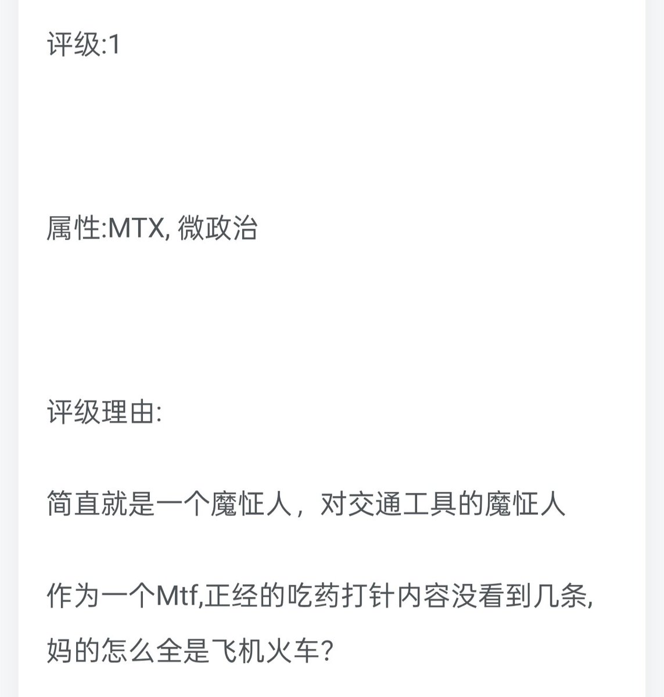

Cassiopeia🍥
@DustSwallo15805
@Furina_8620 @ripo0079 交通工具是好的👍

東北亞旅行家雪菜
@Furina_8620
@ripo0079 网站组织者一开始反跨的，给推特上的跨性别评级来着，还给我评过来着😡，后来不知道怎么了就自己切除生殖器变跨了，天天搞抽象，据说还干了不少坏事，不过具体什么事情我就不知道了，另外，他的昵称唐毓文，是中国广西省百色市的一个高中老师，因为强奸儿童而被判刑，用这种人名当昵称实在是恶趣味。 https://t.co/Fe8oENtdNU